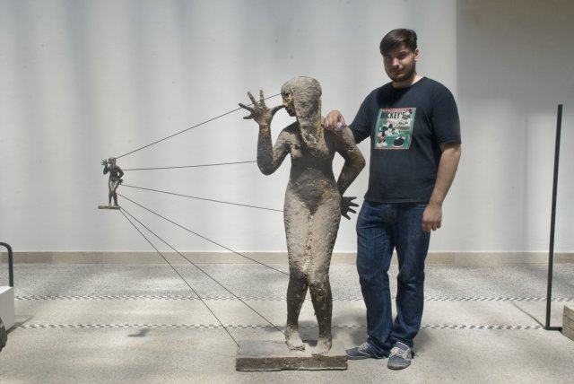
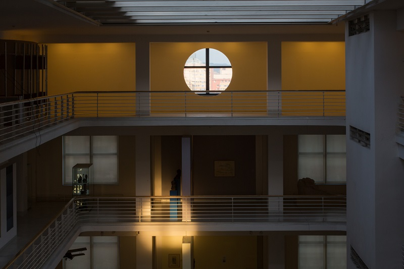

«В галерею люди ходят не для того, чтобы отдохнуть», - утверждает Доминик Ланг (Dominik Lang)— художник, получивший Премию Йиндржиха Халупецкого, которую вручают ежегодно лучшим молодым художникам Чехии. Карина Пфеиффер Коттова (Karina Pfeiffer Kottová) поговорила с Лангом о его взгляде на современную чешскую скульптуру, о педагогическом влиянии в Академии искусств, об инсталляции, которая вызвала неоднозначную реакцию.

"Спящий город", Доминик Ланг у своей работы, Венецианская Биеналле 2011, павильон Чехии и Словакии.
Фото: Tony Anna Mingardi / ASAC
Ваше творчество и педагогическое влияние в пражской Академии искусств (VSUP) связаны с изменением направления чешской скульптуры. Что именно для вас значат эти перемены?
Чешская скульптура имеет важную, можно сказать, иконическую традицию, которая не соответствует её современному состоянию. Когда я учился в Академии, велись дискуссии о возвращении или, наоборот, смерти живописи, о новых медиа и тому подобном, но скульптуры это не касалось настолько, насколько за пределами Чехии. Там работа с материалом в пространстве достигла множества форм, к чему мы в чешском контексте не привыкли. В нашей среде существовали и до сих пор существуют авторы, которые заслуживают большего внимания: поколение групп Pondeli и Insiders и, конечно же, скульпторы 60-х лет. Но мы не смогли использовать их наследие таким образом, чтобы и сегодня скульптура воспринималась как одна из главных форм изобразительного искусства. На данный момент мы с Едит Ержабковой одни из последних, кто хотел бы сохранить классические художественные категории. Тем не менее изменения в сфере скульптуры дают возможность спровоцировать спор о том, насколько огромен потенциал скульптуры не только как пространственного и объектного творчества, но и как человеческого тела-фигуры.
Каким образом вы продвигаете эту тему в педагогической деятельности?
Мы стараемся выйти за рамки классического обучения и консультаций и направить молодой коллектив скульпторов и художников, которые работают с пространством, к более широкой дискуссии, например, посредством экспериментальных проектов. Для нас это значит использовать исследовательский потенциал академической среды. В пример можно привести нашу выставку, “Лапидарий” (“Lapidarium”), возникшую из дискуссии со студентами о возможностях рекапитуляции важных моментов в недавней чешской скульптуре, которая повлияла на современную ситуацию. Выставка была частью более длительного проекта, где мы собираем иностранные тексты, инициируем возникновение новых, организуем тематические воркшопы с другими школами и готовим материалы к публикации.
Как долго вы планируете работать в Академии искусств, сохраняя подобную новизну взглядов и не становясь одним из «незаменимых педагогов»?
Мне кажется, что это скорее проблема институции, нежели отдельных преподавателей. Академии должны иметь ясное, открыто обсуждаемое, уверенное направление, а не демонстрировать неосмысленную паническую защиту собственных позиций. А также регулярно проверять свой педагогический коллектив в различных конкурсах, чтобы публично доказать, что именно действующий является самым лучшим. Я не имею, конечно, в виду постоянные радикальные, безрассудные перемены и конфликт поколений. И я не говорю о нашей Академии искусств, так как её ждут значительные перемены с приходом нового ректора Томаша Ванька.
А современному искусству присущ коллективизм, или над всем господствует индивидуальность?
Чувства взаимосвязи и солидарности, безусловно, значимы. Существуют активистские инициативы, которые не дают художественной сцене «заболеть», указывают на недуги, на которые необходимо обратить внимание. Малейшая инициатива в итоге влияет на условия, в которых находится каждый отдельный художник. Каждый должен вести себя профессионально и ответственно по отношению не только к своей работе.
В одном из интервью вы сказали, что в Национальной галерее, где проходила выставка финалистов Премии Йиндржиха Халупецкого, вам досталось место, которое случайно осталось свободным. Даже на выставке в Центре современного искусства «DOX» вы не особенно интересовались выставочной архитектурой. Остались ли места, более выгодные для вашей интервенции?
Когда как. Здание Велетржного дворца (Национальной галереи - прим.ред.) очень красивое, но хорошего выставочного пространства там мало. Кроме того, я чувствовал, что уже не отношусь к молодому поколению, для которого награда предназначена. Сначала я старался абстрагироваться от важности выставки и обсуждений, кто, где будет размещён, что будет делать и т. п. Мне в итоге достались два конца павильона. Я заметил симметрию и специфическое пространственное положение этих двух мест и начал работать с ними.

Победившая инсталляция "Восход-Запад" в премии Йиндржиха Халупецкого. Доминк Ланг, 2013.
Фото: из архива Jindřich Chalupecký Society / www.cjch.cz
Как вам работалось с контекстом Велетржного дворца? В прошлом году вы отказались представить там свой проект, который делали для павильона Чехии и Словакии на Венецианской биеннале, и вместо него там была размещена полемическая инсталляция, навеянная пожаром здания в 1974 году.
С приближающимися переменами в галерее, надеемся, наконец к лучшему, было бы глупо не выставлять там свои проекты. Наоборот, я сейчас в этой неповоротливой структуре узнал людей, которые ради галереи живут и стараются её изменить. Можно упомянуть директора коллекции современного искусства, ряд людей из лекторского отделения. Я думаю, что, несмотря на все проблемы, институция Национальной галереи наделяет Премию Халупецкого значительной ценностью. Противоречивость моего участия из-за возраста и условий, однако, повлияла на то, что я не был готов к слишком вымеренной, сложной в реализации инсталляции.
На сайте iHned.cz появилось мнение, что вы слишком поздно получили награду, так как уже начали международную карьеру. Считаете ли вы, что именно в этом начинании и есть смысл награды? Что вам лично она принесла?
Да, выход на международный уровень — одно из главных значений Премии Халупецкого. Однако в искусстве обычно не существует таких понятий, как поздно или рано. В предыдущих двух случаях, когда я тоже был финалистом, на мой взгляд, выигрывали лучшие. В первый раз я был самым младшим из номинантов и чувствовал себя будто в высшем обществе среди больших художников. Сейчас я был одним из самых старших и опытных финалистов, так как у меня уже несколько больших реализованных проектов и выставка в Венеции. Может показаться, что награда мне ничего нового не принесёт, потому что получив её, художник обычно впервые едет в Нью-Йорк и выставляется в Национальной галерее. Для меня и то и другое будет во второй раз. Но это не значит, что бесполезно. Возможно, это импульс, чтобы подойти к работе с немного другой стороны, что всегда очень сложно.
Чешский автор дома сделает больше, чем если будет одним из тысячи художников, например, в Берлине
Если сравнивать чешскую арт-сцену с иностранной, как вы думаете, имеет ли она собственную специфику, благодаря которой может реализоваться в международном контексте?
Никакая ярко выраженная специфика мне не приходит на ум. Наоборот, стремление к изоляции от возможных иностранных влияний мне кажется болезненным. Хотя иностранным кураторам мы и представляемся немного обособленными, но производим на них достаточно хорошее впечатление, благодаря камерной структуре художественной сцены. Нам всем присуща определённая черта: ждём, пока за нами из-за границы кто-нибудь придёт. Парадоксально, что это и создаёт хорошие условия, чтобы человек сидел дома и работал, так что я бы не относился к этому скептически. Тем более что чешский автор дома сделает больше, чем если будет одним из тысячи художников, например, в Берлине.
В СМИ ваш проект "Восток Запад" (“Vychod Zapad”) и вся выставка финалистов Премии Холупецкого вызвали неоднозначную реакцию. Этому способствовал раскол между традиционным зрительским ожиданием и тем, что в настоящий момент происходит в современном искусстве. Как вы считаете, коммуникативная пропасть между современным художником и зрителем на самом деле так огромна, как некоторые утверждают?
Абсурдно, что подобную дискуссию вызвала именно инсталляция, которая мне кажется очень открытой для любительской публики. В ней существует несколько уровней и, безусловно, хотя бы один из них не мог оставить зрителя безучастным. По крайней мере, возможность выглянуть за рамки галерейной изоляции внутрь наружного, сквозь выставочную панель, остановила почти каждого во время бега по галерее. Искусство в целом сейчас, на мой взгляд, более доступно, чем то, которое я видел или делал сам несколько лет назад. Чаще всего центральной точкой проекта является зритель художественного произведения, а не его автор.
Что касается раскола, я бы не сваливал вину только на художника. Я не думаю, что современное искусство должно упрощаться дословными подписями, эстетизацией или плоской концепцией. Художник не должен смущаться, что его творчество слишком сложно и требует активного участия зрителя. Взаимодействие с концептуальным произведением может вызвать впечатление, как и поглощенность красивой картиной, которая вызывает не меньше противоречий. Сам зритель должен стыдиться желания, чтобы искусство было ему подано на тарелке, чтобы ему не нужно было утруждать себя задумываться о нём глубоко. В галерею люди ходят не для того, чтобы отдохнуть. В некоторой степени подобные противоречивые реакции мне льстят. Это успех, когда человек делает что-то, что вызывает отклик. Получить награду за «дырки в ДСП», пусть это и не совсем так, звучит отлично. И я рад — что-то происходит.
Доминик Ланг (1980) — выпускник пражской Академии изобразительных искусств (AVU). С 2012 года вместе с куратором Едит Ержабковой ведущий скульптурной мастерской в Академии искусств (VSUP). Самыми известными его проектами являются художественная реализация «Спящий город» (Spici mesto) на Венецианской биеннале (2011), а также «Распространяющийся страх» (Rozsirena uzkost) в венском выставочном павильоне Secession (2013). Премию Йиндржиха Халупецкого получил в 2013 году за инсталляцию «Восток Запад» (Vychod Zapad): в выставочной панели вырезал две дырки, сквозь которые можно было наблюдать восход и закат солнца.